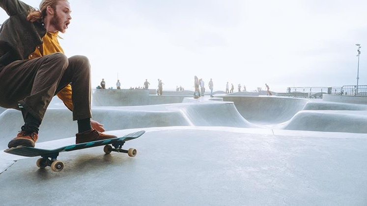
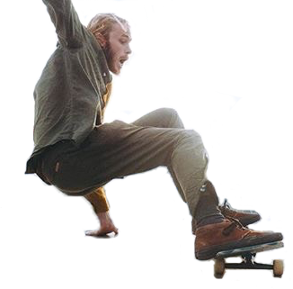
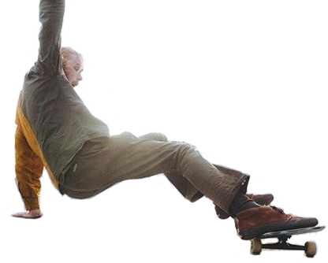
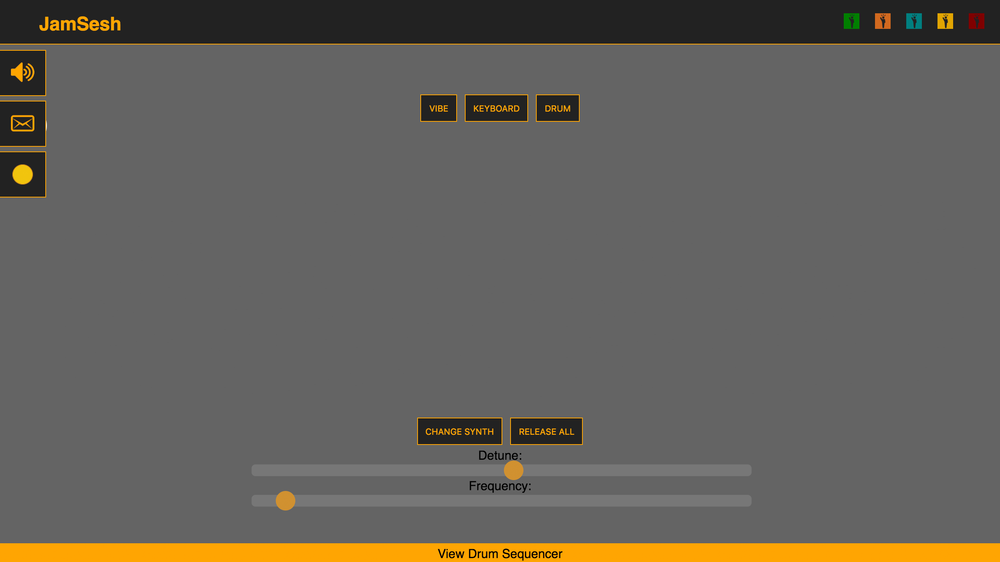
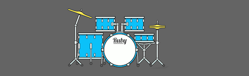
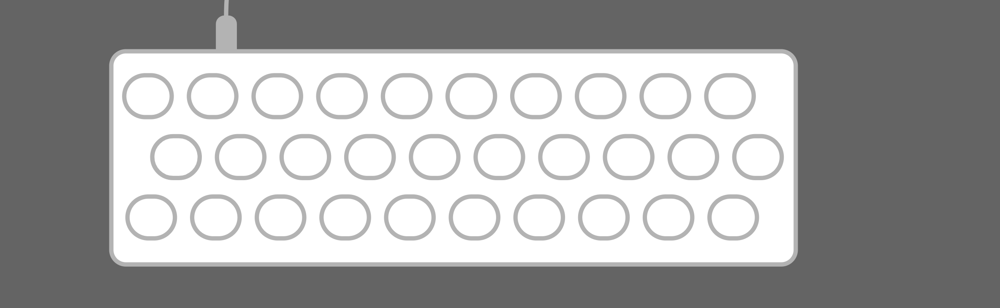
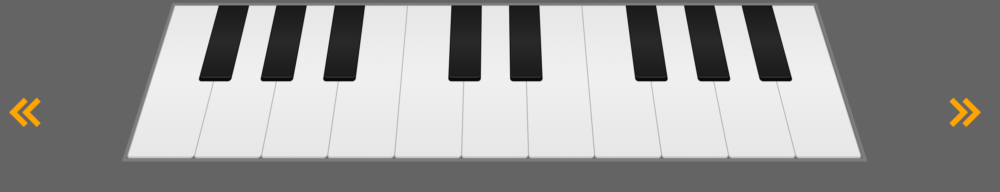

<!--//, 'transition':homeTransition-->

<!--HOME NAV-->

<!--[ngStyle]="{'display':homeNavDisplay, 'opacity': homeNavOpacity , 'top':homeNavTop}"-->
<mat-grid-list  id="homeNav" [@enterSite]="currentState"    cols="4" rowHeight="2:3" gutterSize="0px" >
  <!--<app-home > </app-home>-->
  <!--[currentState]="toState"-->
  <!--'transition':slideMenuTransition,-->

  <!--[enterState]="slideState"-->
  <!--[ngStyle]="{  'bottom':animationTop}"-->
  <mat-grid-tile  [routerLink]="['/animation']" [@slider1]="animSlideNavState" (@slider1.done)="slider1Animation()"   (mouseenter)="onAnimationhover($event)" (mouseleave)="onAnimationhover($event)">
    <h2 class="tileHeader">ANIMATION</h2>
    <!---->
    <!---->
    <!---->

  </mat-grid-tile>
  <!--//"onJamSeshHover($event)" (mouseenter)=[@itemAnim]-->
  <mat-grid-tile [routerLink]="['/jamsesh']" id = "jamseshHomeTop" [@slider2]="jamSeshSlideNavState" (@slider2.done)="slider2Animation()"  [ngStyle]="{top:jamseshHomeTop}" (mouseenter)="onJamSeshHover($event)"  (mouseleave)="onJamSeshHover($event)" >
    <h2 class="tileHeader">WEB DEVELOPEMENT</h2>
    <!---->
    <!--<div id="instrumentContain">-->
      <!---->
      <!---->
      <!---->
    <!--</div>-->
  </mat-grid-tile>

  <!--this.yolo = setInterval(()=>this.sprite(), 50);-->
  <mat-grid-tile [ngStyle]="{top:stitchHomeTop}" [@slider3]="stitchSlideNavState" id = "stitchHomeTop"  (mouseenter)="onStitchHover($event)" (mouseleave)="onStitchHover($event)">
    <h2 class="tileHeader">USER EXPERIENCE</h2>
    <!--<div class="backgroundImage" id="stitchButton"-->
         <!--[ngStyle]="{'background' : 'url(../../assets/img/stitchSprite3.png)', 'background-position-x': left, 'background-position-y': top, 'background-size': '499.2%'}"  ></div>-->
  </mat-grid-tile>

  <mat-grid-tile>
    <h2 class="tileHeader" [ngStyle]="{top:dataScienceHomeTop }" [@slider4]="dataSlideNavState" >DATASCIENCE</h2>
  </mat-grid-tile>
</mat-grid-list>
